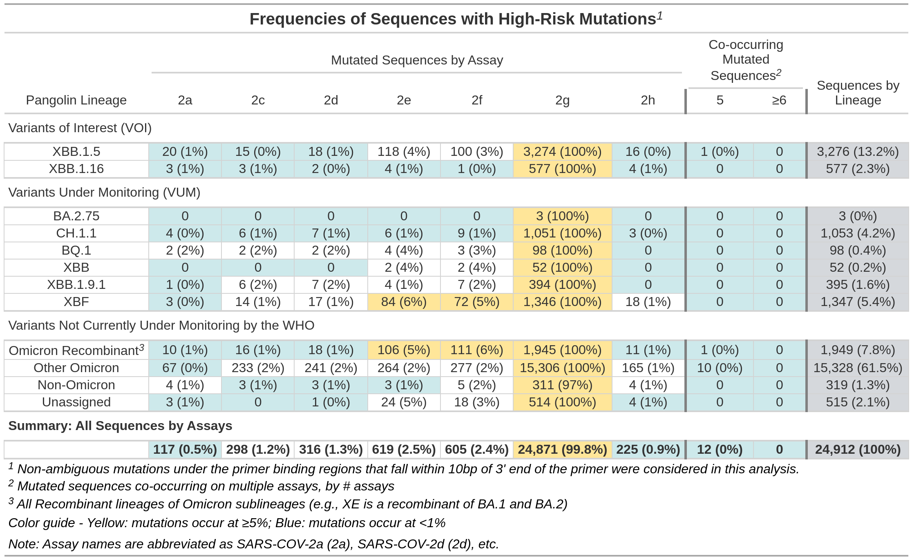
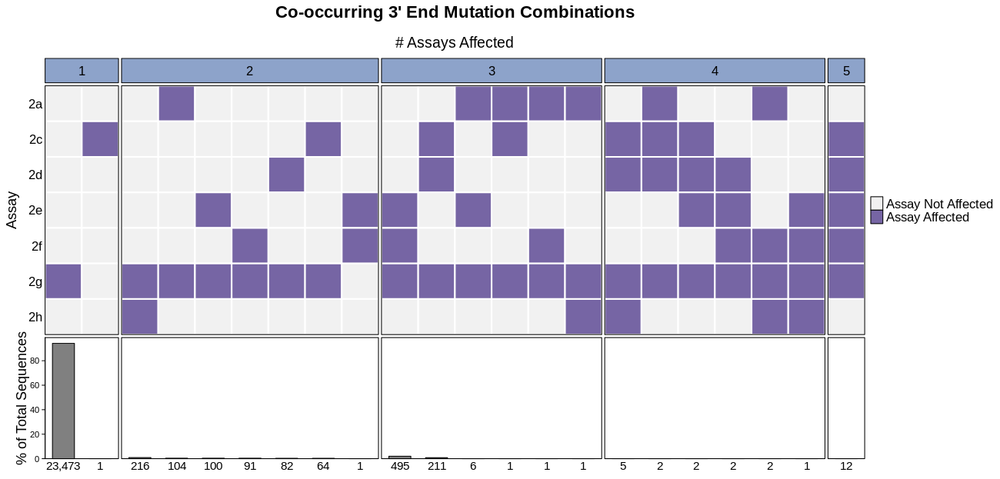
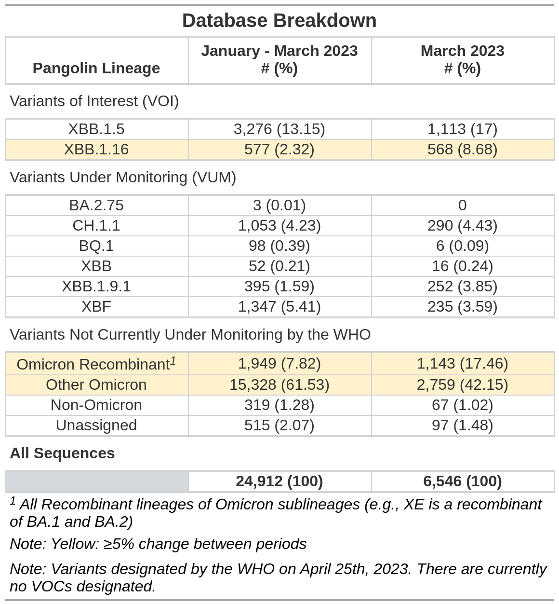
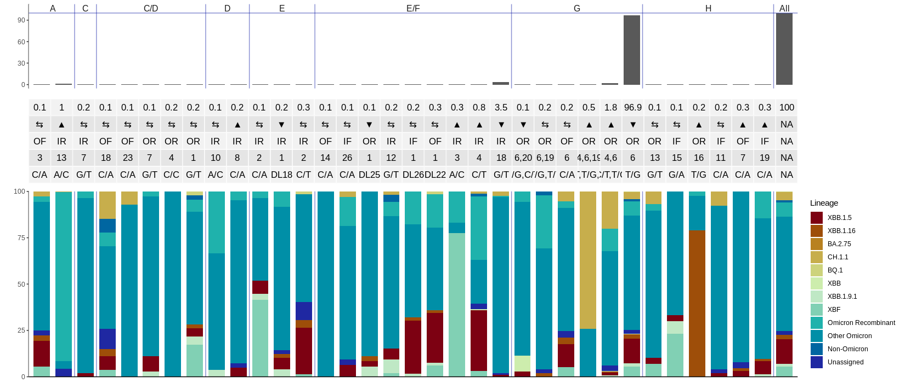

CoMIT is an R package developed by the Applied Math team at BioFire Defense. The goal of CoMIT is to monitor performance of BioFire Defense’s COVID-19 7-assay test with reference to SARS-CoV-2 sequences and metadata pulled from the GISAID EpiCoV database (https://gisaid.org/). It uses a binning algorithm to sort sequences based on mutation characteristics and performs pairwise alignments to the reference sequence only when absolutely necessary. Output is organised in a SQLite database. A subset database can be pulled from the original database, taking a user-created lineage csv file as input. This subset database is then used to create various visualizations, with sequences categorized based on lineage from the input file. Sequences are also grouped in the visualizations according to an internal system for evaluating predicted risk to the COVID-19 test.
Installation
From Source
You can install CoMIT like so, where “path” is the path to the source (.tar.gz) file:
install.packages("CoMIT_1.0.0.tar.gz", repos = NULL, type = "source")If a message appears saying that dependencies are not available, then install those dependencies by running install.packages("dependency name") in the console. Then re-run the installation of the source file.
If you get the following warning:
WARNING: Rtools is required to build R packages but is not currently installed. Please download and install the appropriate version of Rtools before proceeding.
then your computer doesn’t have Rtools installed, which is required for installing source packages. First run R.version in the console and take note of your version of R (it should show up next to the version.string variable). Then go here and click on the Rtools version that corresponds to your R version. You should be fine to install Rtools to the default location. Once the installer finishes, you should be able to install CoMIT.
Usage
Here are the exported functions from the package:
# Main algorithm functions
build_COVID_DB()
update_db()
pull_subset_db()
# Visualization functions
makeAssaySummaryTables()
makeAssaySummaryTablesCondensed()
makeCoOccHeatmaps()
makeCoOccTables()
makeCoOccTablesCondensed()
makePrimerVarTable()
makedbBreakdownTable()
makedbBreakdownTableCondensed()
# Useful utility functions
buildDBFromSchema()
mismatchGenerator()
translateMutationForward()
translateMutationReverse()To see all the functions available for use, run getNamespaceExports(“CoMIT”). To see information on a specific function, including a description and its required parameters, run ?functionName. Note that all visualization functions begin with the word “make”.
Here is the general pipeline for running CoMIT:
# Create a new database:
build_COVID_DB()
# Update a database with sequences from one or more .fasta file by running them against the BioFire defense Covid-19 test primers (run the sorting algorithm):
update_db()
# Create a subset database from the original database with a lineage file:
pull_subset_db()
# Run whatever visualization functions you would like to:
# (any exported function beginning with "make")And here is an example of building a new database:
library(CoMIT)
build_COVID_DB(DB_NAME = "test", locationPrefix = paste0(tempdir(), "/"), include_all_assays = TRUE, force = TRUE, silently = FALSE)
#> [1] "The following tables were built:"
#> [1] "Ambiguous_Seqs" "Assay_Info" "Cospot_Key"
#> [4] "High_N_Seqs" "ID_Map" "Primer_Details"
#> [7] "Primer_Info" "Primer_Locations" "Seq_Info"
#> [10] "Seq_Meta" "Var_Amplicon_Info" "Variant_Info"
#> [13] "Variant_Type" "sqlite_sequence"
#> [1] "/tmp/RtmpzgUn3t/test.db"Here are some examples of visualizations that can be produced. These come from the BioFire Defense monthly evaluation which uses sequences collected over the span of three months and submitted to the GISAID EpiCoV database.




